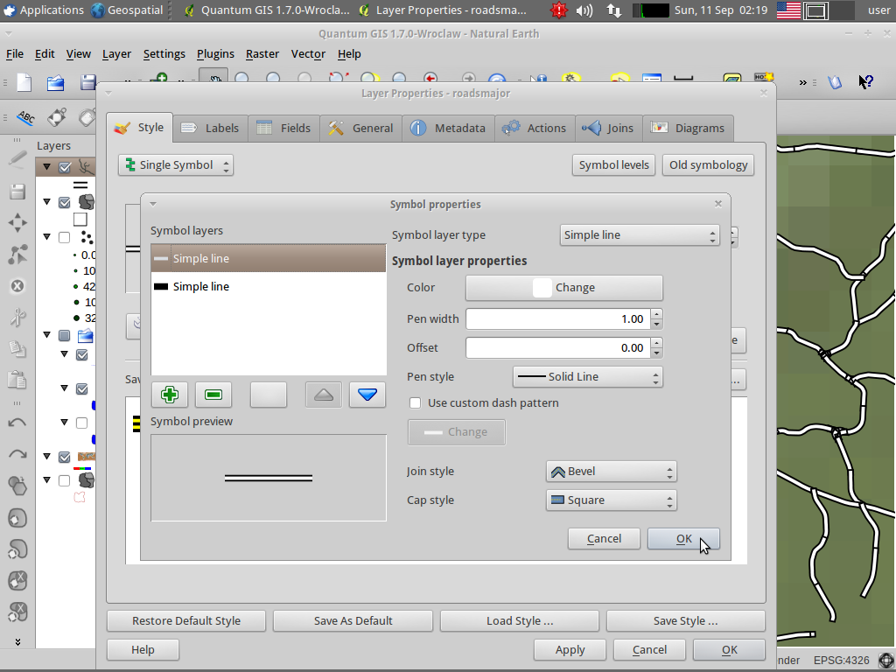

New symbology features¶
Multiple symbol layers for road symbolization¶
Choose File ‣ Open Project... from the menu bar
Select QGIS-NaturalEarth-Example.qgs and press Open
Zoom in somewhere to speed up redrawing
Click Layer ‣ Add Vector Layer from the menu bar
Press Browse and navigate to /home/user/data/north_carolina/shape/roadsmajor.shp and press Open
Go to the tab Coordinate Reference System (CRS), check Enable ‘on the fly’ CRS transformation and press Ok
Right click roadsmajor in the Layers tree and select Zoom to layer extent
Double click roadsmajor in the Layers tree and activate the Style tab
Press the Change button to edit the line symbol
Change the color to black and set 2mm pen width
Press + to add a second symbol layer
Change the color to white and set 1mm pen width
Press Ok and Apply
- You should see the major roads, but with artefacts at the end of line segments
Press the Symbol levels button and check Enable symbol levels

Press Ok and Ok again to close the Layer properties
- You should see the major roads with the black symbol layer draws first and the white layer on top
{kind=link}